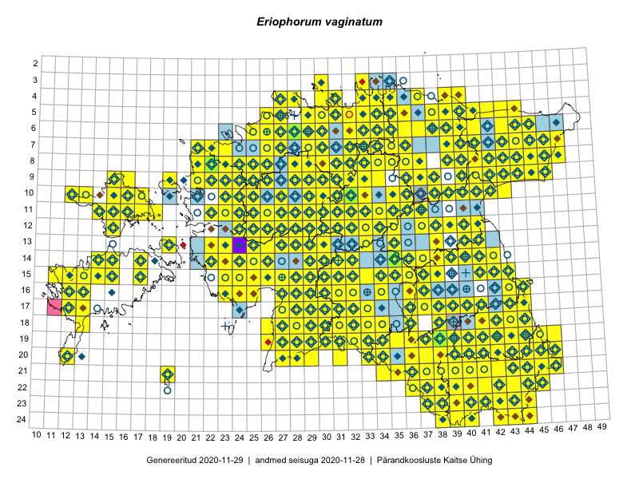

Eriophorum vaginatum
Uuendatud: 2016-12-01
Kaardile koondatud taksonid: Eriophorum vaginatum L.

Kaart põhineb 488 kirjel, neist vaatlusi 487 ja eksemplare 1.
Kuvatud viited 20 esimesele andmebaasikirjele, ülejäänud PlutoFis
- Peedu Saar, Timo Luhamäe: 2015-05-10: 12-30: ala
- Peedu Saar, Liina Oja: 2015-05-22: 19-29: ala
- Tiit Hallikma, Indrek Tammekänd, Toomas Kukk: 2015-06-09: 12-29: ala
- Toomas Kukk, Raivo Kalle: 2015-05-14: 09-41: ala
- Ott Luuk, Toivo Sepp: 2015-07-29: 09-31: ala
- Peedu Saar, Ott Luuk: 2015-06-21: 14-41: ala
- Peedu Saar, Ott Luuk: 2015-06-21: 14-42: ala
- Ott Luuk, Peedu Saar: 2015-07-27: 11-35: ala
- Peedu Saar: 2015-07-04: 18-44: ala
- Ott Luuk, Peedu Saar: 2015-08-13: 24-44: ala
- Ott Luuk, Peedu Saar: 2015-08-13: 24-43: ala
- Peedu Saar, Ott Luuk: 2015-07-27: 10-35: ala
- Peedu Saar, Eerik Leibak: 2015-07-30: 15-42: ala
- Peedu Saar, Liina Oja: 2015-06-08: 10-33: ala
- Peedu Saar, Liina Oja: 2015-06-09: 17-28: ala
- Peedu Saar, Liina Oja: 2015-06-10: 14-30: ala
- Ott Luuk, Peedu Saar: 2015-08-12: 23-43: ala
- Toomas Kukk, Eerik Leibak: 2015-08-11: 09-16: ala
- Peedu Saar, Liina Oja: 2015-06-10: 14-31: ala
- Peedu Saar, Liina Oja: 2015-06-11: 15-29: ala